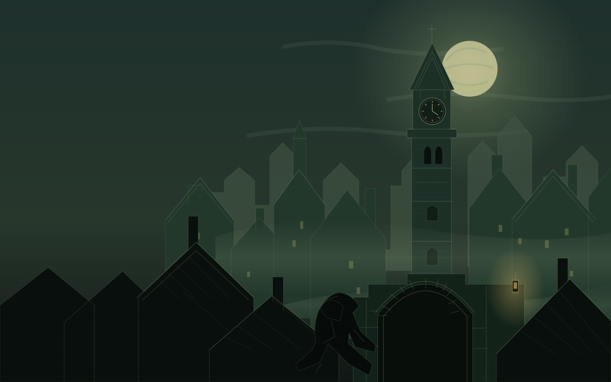

Your hands.
Your tools.
Hold the sword, swing the blackjack, and draw the bow yourself. Reach over your shoulder for an arrow. Pass a weapon from one hand to the other.

An unofficial return to The City
The shadows are yours.
A familiar city. A new way to disappear.
Step into Garrett’s world, take his tools in your hands, and keep to the dark.
Early development build First mission playable
Standalone QuestPlay in Quest Browser
PC VRWebXR with SteamVR
Your copy of Thief IIYour game files stay on your device
Old streets. New instincts.
The world you remember, with the tools of a thief finally within reach.
Hold the sword, swing the blackjack, and draw the bow yourself. Reach over your shoulder for an arrow. Pass a weapon from one hand to the other.
Pull open your coat and pick what you need. Equipment on one side, keys and mission belongings on the other. Small objects, right at your fingertips.
Put out torches with water arrows. Listen to the guards. Keep an eye on your light gem, and let The City’s shadows do the rest.
Your next job
Prepare your files once.
After that, come back and play.
On your Windows PC
Save the script in your Thief II folder, beside Thief2.exe. Right-click it and choose Run with PowerShell.
It creates Thief2-VR-assets.zip. Wait for it to finish, then press Enter to close the window.
Download file packerOn the device you’ll play on
On Quest, copy the ZIP to your headset first, then open this page in Quest Browser.
Drop your game ZIP here, or choose it below.
Saved here. Never uploaded.
03 Enter The City
Return to Thief II’s opening mission, with Garrett’s tools in your hands.
Checking this device...
Let the mission load, then select Enter VR.
Before you slip away
An early build of a familiar game.
A few things to know before you enter.
Your own installed copy of Thief II: The Metal Age, a Windows PC to prepare the ZIP, and a VR headset with a WebXR-capable browser. The current build includes the first mission, Running Interference.
Yes, on Quest. Prepare the ZIP on your PC, transfer it to the headset, then import it here in Quest Browser. The game runs in the headset’s browser.
Start SteamVR and open this page in a compatible WebXR browser on your PC. Import your ZIP, select Play, and enter VR after the mission loads.
No. Your files are saved in this browser on this device. On your next visit, select Play. Clearing the site’s browser data, changing browsers, or switching devices means importing again.
This is an early development build focused on the first mission. Expect bugs and unfinished interactions. It’s an unofficial fan project, and you need to supply your own game files.